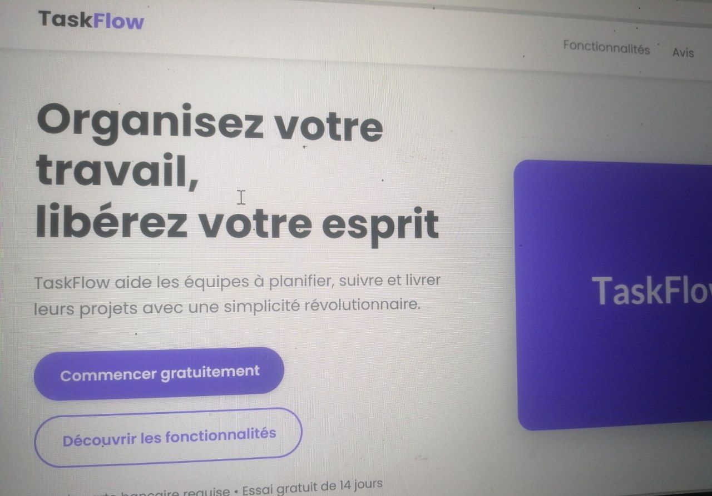
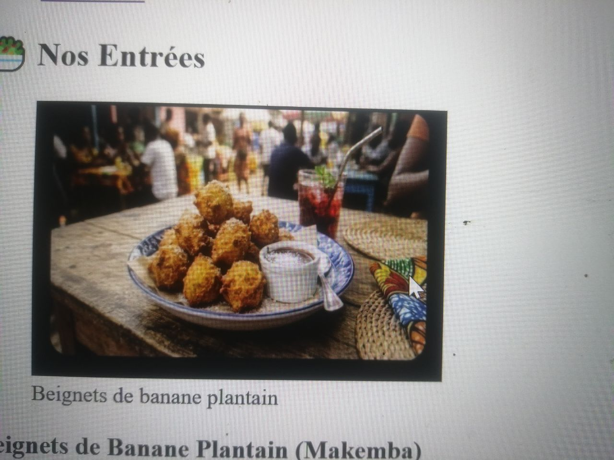
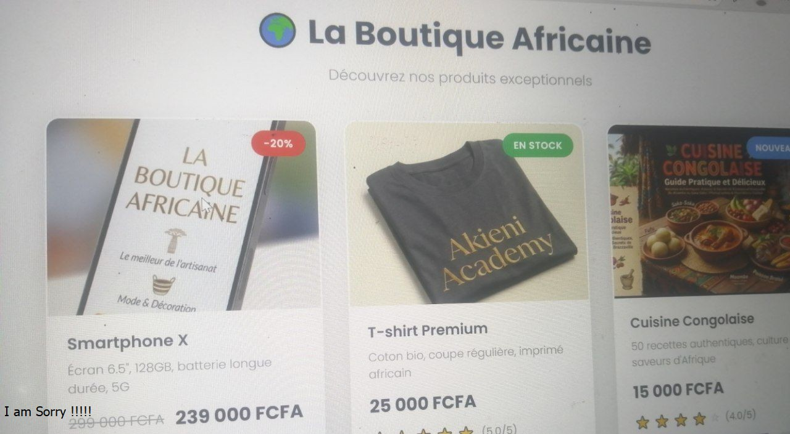
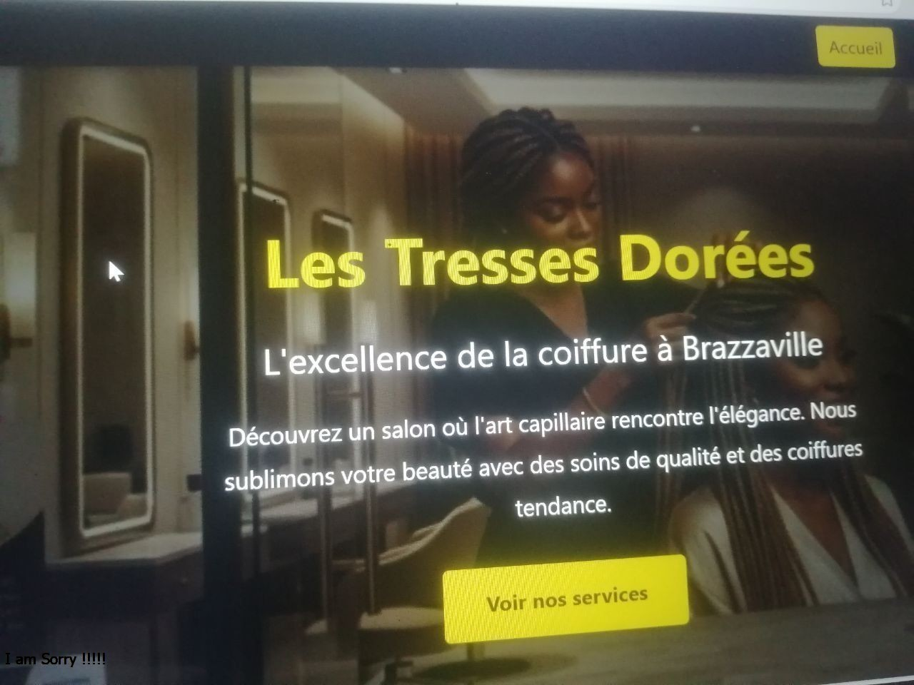
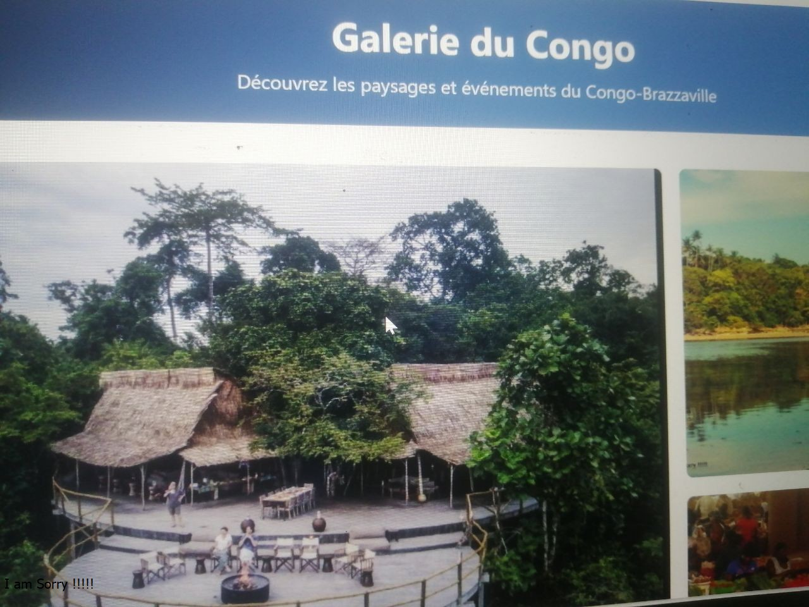

Développeur Web Full Stack | Créatif | Passionné
Je crée des sites web modernes, responsives et accessibles. Découvrez mon travail ci-dessous !
Voir mes projetsBonjour ! Je suis Thomas ISSOKO, un développeur web passionné par la création d'expériences numériques engageantes et accessibles. Évoluant dans le domaine de l'informatique depuis environ deux ans, j'ai acquis une expérience pratique principalement axée sur les bases de données et le développement web.
Actuellement en formation Full Stack au sein de l'académie Akieni Academy, je renforce mes compétences techniques à travers des projets réels, des exercices pratiques et un apprentissage continu des technologies modernes.
Ce que j'aime : le design, le code propre, l'accessibilité, résoudre des problèmes créatifs, et travailler sur des projets concrets qui ont un impact réel. Je m'inscris dans une dynamique de progression constante avec l'objectif de devenir un développeur complet, capable de concevoir et de développer des solutions web performantes.

Les Tresses Dorées est un site vitrine professionnel développé pour un salon de coiffure situé à Brazzaville, République du Congo. Présente l'entreprise locale, ses services, et permet aux clients de prendre contact facilement.

Site vitrine pour le Restaurant Saveurs du Congo avec menu interactif complet, navigation multi-sections, fiches détaillées pour chaque plat, tableau comparatif des prix et formulaire de réservation en ligne.

Dashboard Admin est une interface d'administration moderne avec des statistiques financières en Francs CFA (FCFA), suivi des commandes, espaces graphiques et menu de navigation latéral. Maîtrise des layouts complexes avec CSS Grid et Flexbox.

Galerie du Congo est un projet de galerie photo responsive utilisant CSS Grid pour créer une mise en page dynamique. Présente 9 images des paysages et de la culture du Congo-Brazzaville avec superpositions interactives et lightbox.

TaskFlow est une landing page professionnelle pour une application web de gestion de tâches. Présente un produit SaaS avec toutes les sections classiques : présentation, fonctionnalités, témoignages, plans tarifaires et appel à l'action.
Renforcement des compétences techniques à travers des projets réels, des exercices pratiques et un apprentissage continu des technologies modernes. Développement de compétences en HTML5, CSS3, JavaScript, Git/GitHub et bases de données.
Acquisition d'une expérience pratique principalement axée sur les bases de données et le développement web. Travail en autonomie avec des ressources limitées, développement d'une forte capacité d'adaptation, de résolution de problèmes et de discipline personnelle.
Début de l'aventure dans le domaine de l'informatique. Découverte des bases du développement web et passion pour le code. Premiers projets et apprentissage des fondamentaux HTML et CSS.